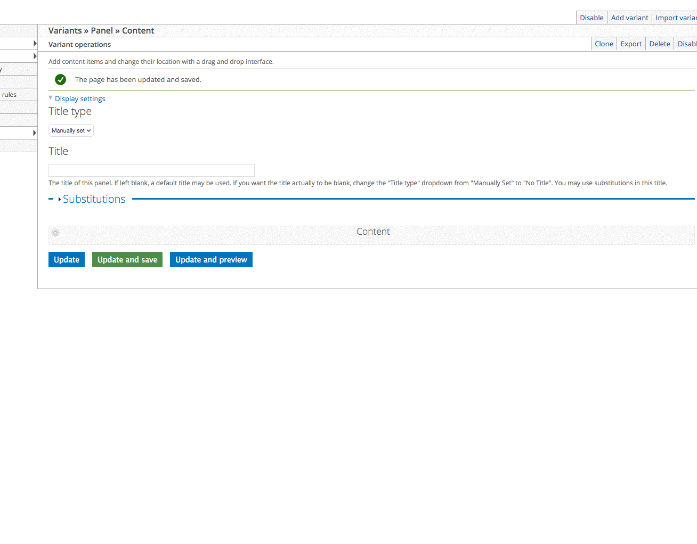
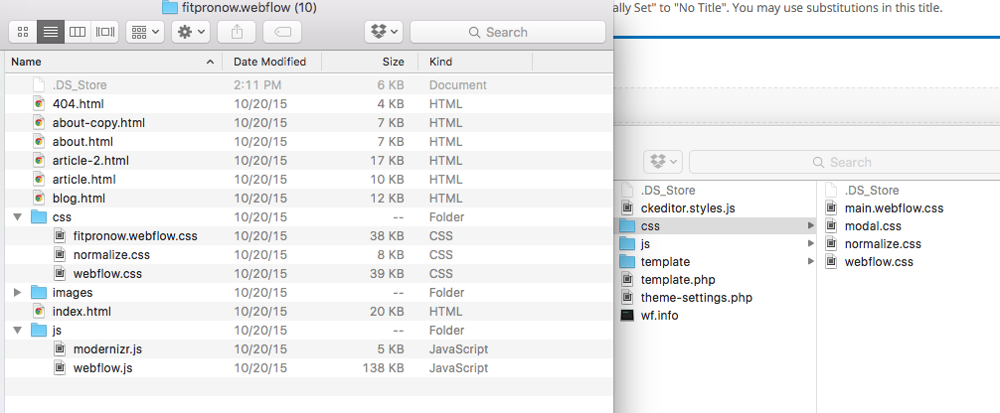
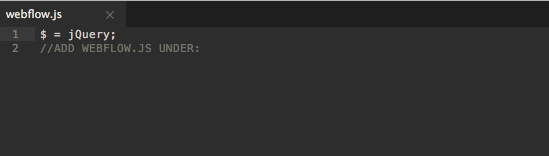

Webflow -> Drupal
Just follow these steps. You will be able to generate webflow site using the drupal CMS in no time. "Beat my time 4 hours LOL"
Directory
Easy to follow steps
Setting up new site

First drush commands
drush use @abc-com
drush uli
Enable
/admin/appearanceEnable the webflow theme and set as defult
/admin/modules?filter=webEnable webflow and webflow_layout modules
/admin/structure/pagesEnable Default site template
Click edit
» Add a new variant
create variant
select layout use webflow “clean”
Hello there! Custom Pane, You should be here...

Webflow Files
now what?...

now add css and javacript files to the drupal theme..
keep main.webflow.css file do not replace it, just open it and add the css there.. wait your not done yet with that file..
replace all
../imageswith:
/files/images
now you know what to do with the images
drop them in the files folder on the drupal directory /files
webflow.js
add JS content under the comment please..

Congrats now you have a webflow -> drupal theme
Now let get to the custom Pane Code